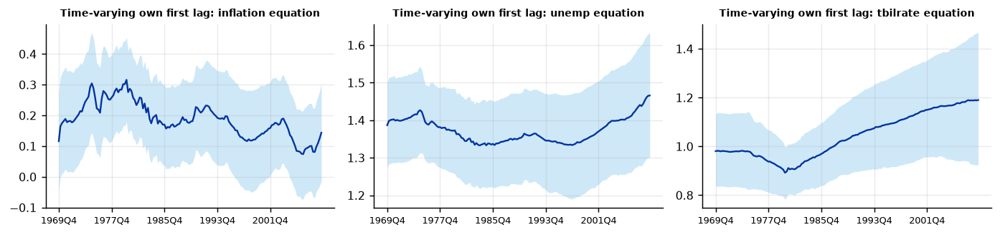
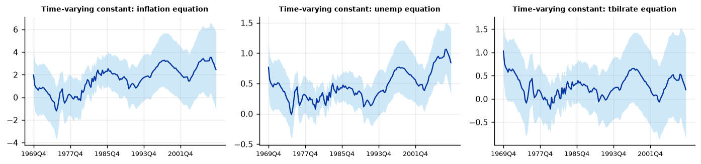
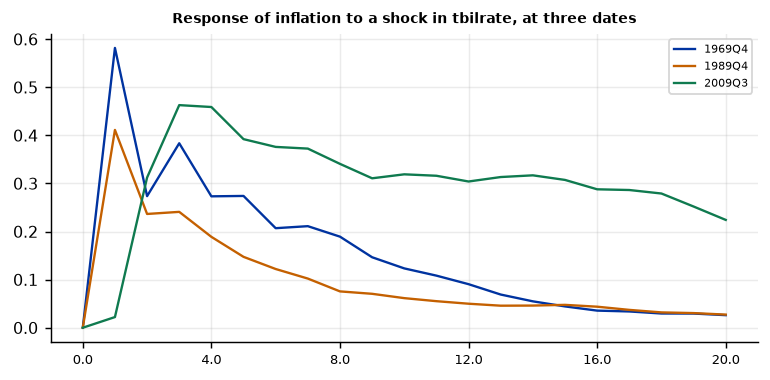
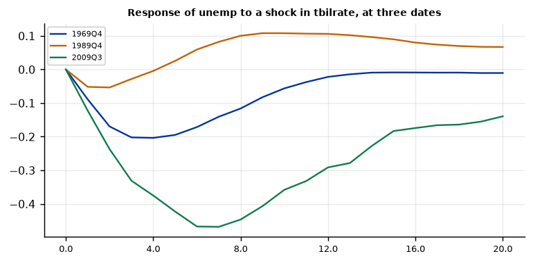

Run this model on your own data in Open Econometric Systems →
Step 1The question and the model
Has the effect of monetary policy on inflation changed since the 1960s? The model lets all VAR coefficients drift:
where \(X_t\) holds a constant and \(p\) lags of the three variables. With three variables and two lags each date has 21 coefficients; the random walk lets them move a little each quarter. How much they move is governed by \(Q\), whose prior is set from a training sample: the first 40 observations are used only to estimate a constant-parameter VAR, whose coefficients and covariance matrix centre the prior for \(\beta_0\) and \(Q\) (Primiceri 2005). The scale \(k_Q\) says how fast coefficients may drift: small values give nearly constant coefficients, large values a flexible but noisy path.
Be sceptical of time variation
A TVP-VAR can always find movement in coefficients, even when the true model is constant, because the random walk is flexible and the data are noisy. Three habits keep a paper honest: (1) test whether coefficients really moved, using the posterior probability that they changed (Step 4); (2) show that the results do not depend on \(k_Q\) and the training sample (Step 8); (3) in a macroeconomic VAR, ask whether changing volatility (the SV-VAR guide) rather than changing coefficients explains the instability: much of the apparent time variation in the 1970s and 1980s turned out to be a change in shock variances (Sims and Zha 2006).
How to write it: the model
We estimate a time-varying parameter VAR with random-walk coefficients and a constant error covariance matrix, in inflation, unemployment and the three-month Treasury bill rate, with two lags (Cogley and Sargent 2005; Primiceri 2005). The prior for the initial coefficients and the covariance of their innovations is calibrated on a training sample of the first 40 quarters (1959–1969), so estimation starts in 1969Q4 with 160 observations; the prior scale of the innovation variance is \(k_Q = 0.01\). The posterior is simulated with a Gibbs sampler, drawing the coefficient paths with the Carter-Kohn (1994) simulation smoother, using 6,000 draws after 4,000 burn-in draws. Impulse responses at a date use the coefficients of that date, identified recursively with the interest rate ordered last.
Step 2Load the data and test for unit roots
import numpy as np
import pandas as pd
import oes_engine as oes # pip install -e open-econometric-systems/oes-engine
data = open("us_macro.csv").read()
df = pd.read_csv("us_macro.csv")
vars_ = ["inflation", "unemp", "tbilrate"]
print(df[vars_].describe().round(2).loc[["mean", "std", "min", "max"]])
spec = dict(vars=vars_, time="date", lags=2, training=40, kQ=0.01, draws=6000, burn=4000)
r = oes.run("tvpvar", data, spec) # about 80 seconds on a laptop; several minutes in the browser
oes.show(r, "Unit-root") inflation unemp tbilrate
mean 3.98 5.89 5.32
std 3.25 1.46 2.80
min -8.79 3.40 0.12
max 14.62 10.70 15.33
Unit-root tests
ADF level, constant: p ADF level, trend: p ADF first difference: p KPSS level: p Conclusion
Variable
inflation 0.0271 0.0822 0.0000 0.0808 I(0)
unemp 0.1107 0.3084 0.0008 0.1000 I(1)
tbilrate 0.2805 0.4462 0.0000 0.0538 I(1)
Note: ADF H0: unit root; KPSS H0: stationary (p-values are truncated at 0.01 and 0.10). For a Minnesota-type prior use a prior mean of 1 on the own first lag for I(1) variables in levels (random walk) and 0 for stationary variables. A VAR in levels with a random-walk prior remains valid when the variables are I(1) or cointegrated (Sims, Stock and Watson 1990).How to read it
A TVP-VAR is estimated in levels without a prior on unit roots: the training sample sets the prior mean of the coefficients, and the random walk lets the persistence change. Inflation rejects a unit root at 5% (p = 0.03), unemployment and the T-bill rate do not (p = 0.11 and 0.28). If you use differences, say so. Because coefficients can drift above one, the model can produce explosive paths in short stretches; the summary line "Iterations with no stable path" counts the draws where this could not be avoided (zero here).
Step 3Estimate
oes.summary(r)
oes.show(r, "Residual covariance", rows=4)Observations: 160
Training sample: 40
Lags: 2
kQ: 0.01
Draws: 6000
Iterations with no stable path: 0
Residual covariance (posterior)
Mean Std. dev. 2.5% Median 97.5% P(> 0)
Parameter
Sigma[inflation,inflation] 4.9311 0.6638 3.7521 4.8772 6.4184 1.0
Sigma[inflation,unemp] -0.1967 0.0534 -0.3082 -0.1945 -0.0953 0.0
Sigma[inflation,tbilrate] 0.8075 0.2011 0.4391 0.7959 1.2307 1.0
Sigma[unemp,inflation] -0.1967 0.0534 -0.3082 -0.1945 -0.0953 0.0How to read it
160 observations are used for estimation, 1969Q4 to 2009Q3, with the first 40 quarters kept for the prior. The covariance matrix of the residuals is constant here (stochastic volatility is the subject of the SV-VAR guide): inflation shocks have a variance of about 5, shocks to unemployment about 0.06, and interest-rate and inflation shocks are positively correlated (0.81 covariance), while unemployment shocks are negatively correlated with both.
Step 4Is there time variation?
The central table compares each coefficient at the start and the end of the estimation sample, with the posterior probability that it increased.
oes.show(r, "Coefficients at the start")
tab = oes.frame(next(t for t in r["tables"] if t["title"].startswith("Coefficients at")))
p = tab["P(change > 0)"].astype(float)
n_out = int(((p < 0.05) | (p > 0.95)).sum())
print(f"{n_out} of {len(p)} coefficients have P(change > 0) below 0.05 or above 0.95; chance alone would give about {0.1 * len(p):.1f}.")Coefficients at the start (1969Q4) and the end (2009Q3) of the sample
Regressor Start (mean) End (mean) Change P(change > 0)
Equation
inflation const 1.9084 2.3602 0.4518 0.547
inflation L1.inflation 0.1162 0.1441 0.0279 0.546
inflation L1.unemp -0.7334 -0.9905 -0.2571 0.435
inflation L1.tbilrate 0.7807 -0.0962 -0.8769 0.170
inflation L2.inflation 0.3619 -0.1872 -0.5491 0.008
inflation L2.unemp 0.4812 0.8389 0.3577 0.581
inflation L2.tbilrate -0.5385 0.4205 0.9590 0.865
unemp const 0.7631 0.8555 0.0925 0.545
unemp L1.inflation 0.0068 -0.0193 -0.0262 0.179
unemp L1.unemp 1.3865 1.4675 0.0810 0.654
unemp L1.tbilrate -0.1059 -0.1515 -0.0456 0.367
unemp L2.inflation 0.0253 -0.0225 -0.0478 0.046
unemp L2.unemp -0.5096 -0.5637 -0.0541 0.397
unemp L2.tbilrate 0.0481 0.0988 0.0507 0.698
tbilrate const 1.0334 0.2126 -0.8209 0.252
tbilrate L1.inflation 0.0392 -0.0191 -0.0583 0.232
tbilrate L1.unemp -0.4101 -0.4663 -0.0562 0.461
tbilrate L1.tbilrate 0.9832 1.1939 0.2107 0.758
tbilrate L2.inflation 0.0960 0.0125 -0.0834 0.139
tbilrate L2.unemp 0.3450 0.4835 0.1386 0.596
tbilrate L2.tbilrate -0.2350 -0.2708 -0.0358 0.458
Note: If P(change > 0) is near 0 or 1, the coefficient has moved over the sample: evidence of time variation.
2 of 21 coefficients have P(change > 0) below 0.05 or above 0.95; chance alone would give about 2.1.How to read it
Each row shows a coefficient at the start (1969Q4) and the end (2009Q3), and the posterior probability that it increased. Only 2 of 21 coefficients have a probability below 0.05 or above 0.95, which is what chance alone would give (about 2.1). So the evidence that the conditional means moved is thin. The exception is the second lag of inflation in the inflation equation: it falls from 0.36 to \(-0.19\) (probability of an increase 0.008), and the sum of the two own lags of inflation falls from about 0.5 to about zero, in line with the finding that U.S. inflation became less persistent (Cogley and Sargent 2005); a paper would test the sum directly, from the draws.
Look at the T-bill coefficients in the inflation equation to see why single coefficients mislead: the first lag falls by 0.88 and the second rises by 0.96, with probabilities of 0.17 and 0.87, because the two lags move in opposite directions and their sum barely changes (0.24 at the start, 0.32 at the end). Always judge time variation by sums of lags and by impulse responses, not by one coefficient.
Step 5The coefficient paths
oes.plot(r, "Time-varying own first lag", ncols=3, size=(3.6, 2.6))
oes.plot(r, "Time-varying constant", ncols=3, size=(3.6, 2.6))

How to read it
The charts show the posterior median path of the T-bill rate's own first lag and of the constant of each equation. The own lag is about 0.98 in 1969, dips to 0.91 around 1979, and rises above one after 1990, reaching 1.19 by 2009. This should not be read as an explosive process: the second lag is about \(-0.27\) at the end, so the sum of the two lags is about 0.92. The constant in the interest-rate equation falls from about 1.0 to about 0.2, as inflation and rates came down. A path of this kind is a statement about the model's best description of each period, estimated with few effective observations at each date: treat its wiggles as noise, and its broad drift as the finding.
Step 6Impulse responses at three dates
oes.plot(r, "Response of inflation to a shock in tbilrate", ncols=1, size=(6, 3))
oes.plot(r, "Response of unemp to a shock in tbilrate", ncols=1, size=(6, 3))

How to read it
The charts show the response of inflation and unemployment to a one-standard-deviation rise in the T-bill rate, using the coefficients of 1969Q4, 1989Q4 and 2009Q3. (The date-specific responses here are posterior medians; compute bands from the draws if the paper relies on the comparison.)
- Inflation rises after the shock at all three dates: the price puzzle holds in every period. The response is 0.27 after two quarters in 1969 and 0.24 in 1989, and in 2009 it is delayed (0.02 after one quarter, 0.31 after two) and then more persistent, at 0.34 after eight quarters and 0.22 after twenty, against 0.19 and 0.03 in 1969.
- Unemployment falls by about 0.2 point after a year in 1969 and hardly moves in 1989 (0 after four quarters, +0.10 after eight, the expected sign). In 2009 it falls by 0.45 after eight quarters, the wrong sign for a tightening.
The 2009 responses are the least reliable: the policy rate was close to zero, its own lag exceeds one, and a shock to it is a very different object from a shock to the funds rate in 1969. A common remedy is to end the sample before the crisis or to treat it separately; if your sample ends in the crisis, say that the final responses reflect the zero lower bound.
Step 7Convergence and diagnostics
oes.show(r, "MCMC")
oes.show(r, "Residual diagnostics")MCMC convergence diagnostics
Effective sample size Efficiency (ESS / draws) Geweke z p-value
Parameter
unemp: const (last date) 309.0 0.052 -1.627 0.1038
unemp: L1.unemp (last date) 336.0 0.056 -0.277 0.7819
tbilrate: L1.tbilrate (last date) 235.0 0.039 -0.501 0.6162
Sigma[inflation,inflation] 1710.0 0.285 -0.750 0.4531
Sigma[inflation,unemp] 2838.0 0.473 -0.235 0.8143
Sigma[inflation,tbilrate] 2440.0 0.407 3.461 0.0005
Sigma[unemp,inflation] 2838.0 0.473 -0.235 0.8143
Sigma[unemp,unemp] 1601.0 0.267 -1.678 0.0933
Sigma[unemp,tbilrate] 2237.0 0.373 0.447 0.6551
Sigma[tbilrate,inflation] 2440.0 0.407 3.461 0.0005
Sigma[tbilrate,unemp] 2237.0 0.373 0.447 0.6551
Sigma[tbilrate,tbilrate] 3681.0 0.613 2.446 0.0144
Note: Geweke compares the first 10% with the last 50% of the chain: |z| > 1.96 suggests the chain has not settled; run more draws or a longer burn-in. ESS above about 200 gives reliable posterior means and bands. Lowest efficiency: 0.039.
Residual diagnostics (posterior-mean coefficient paths)
Statistic p-value Detail
Test
Portmanteau (Hosking), 12 lags 197.8716 0.0000 df = 108; H0: no residual autocorrelation (approximate after estimating lags)
Ljung-Box, inflation 25.2212 0.0138 H0: no autocorrelation
Jarque-Bera, inflation 67.0675 0.0000 H0: normal residuals
ARCH LM, inflation 10.5632 0.0319 H0: no conditional heteroskedasticity
Ljung-Box, unemp 29.4345 0.0034 H0: no autocorrelation
Jarque-Bera, unemp 24.8573 0.0000 H0: normal residuals
ARCH LM, unemp 17.9541 0.0013 H0: no conditional heteroskedasticity
Ljung-Box, tbilrate 45.0674 0.0000 H0: no autocorrelation
Jarque-Bera, tbilrate 1523.8435 0.0000 H0: normal residuals
ARCH LM, tbilrate 45.2237 0.0000 H0: no conditional heteroskedasticityHow to read it
Convergence of a TVP-VAR is demanding, because there are hundreds of states. With 6,000 draws after 4,000 burn-in, the effective sample sizes of the coefficients at the last date are 235 to 336 (efficiency of 4% to 6%, above 200 but low) and those of the covariance terms 1,600 to 3,700. Two covariance parameters fail Geweke's test: \(\Sigma_{\text{inflation, T-bill}}\) (z = 3.5) and \(\Sigma_{\text{T-bill, T-bill}}\) (z = 2.4): the chain for the covariance matrix is still drifting. With the default 1,000 draws the sample size for the T-bill coefficient was 26 and the statistic \(-4.5\). In a paper, run at least 15,000 draws with a long burn-in, and report the convergence table, or the posterior means for the covariance matrix are suspect.
Residual diagnostics: serial correlation is rejected for all three variables (Ljung-Box p = 0.014, 0.003 and below 0.001), as is normality (Jarque-Bera 1,524 for the interest rate), and so is the absence of ARCH, in all three. The constant covariance matrix is therefore wrong, and the time variation in coefficients may be absorbing changes in volatility: the SV-VAR guide models these directly, and a paper that claims changing transmission should show that it survives stochastic volatility.
Step 8Robustness: the amount of drift, the training sample and the lags
def path(res, title_start="Time-varying own first lag: tbilrate"):
c = next(c for c in res["charts"] if c["title"].startswith(title_start))["series"][0]["y"]
return [round(c[0], 2), round(c[len(c) // 2], 2), round(c[-1], 2)]
rows = {}
for kq in (0.003, 0.01, 0.03):
rows[f"kQ = {kq}"] = path(oes.run("tvpvar", data, dict(spec, kQ=kq, draws=2000, burn=1500)))
for tr in (30, 50):
rows[f"training = {tr}"] = path(oes.run("tvpvar", data, dict(spec, training=tr, draws=2000, burn=1500)))
rows["1 lag"] = path(oes.run("tvpvar", data, dict(spec, lags=1, draws=2000, burn=1500)))
print(pd.DataFrame(rows, index=["start", "middle", "end"]).T)start middle end kQ = 0.003 0.98 1.04 1.20 kQ = 0.01 0.97 1.04 1.22 kQ = 0.03 0.95 1.03 1.21 training = 30 0.94 1.09 1.23 training = 50 0.88 0.99 1.09 1 lag 0.90 0.93 0.91
How to read it
The table follows the own first lag of the T-bill rate at the start, the middle and the end of the sample. \(k_Q\) (0.003, 0.01, 0.03): the path barely changes (end value 1.20 to 1.22), so the amount of drift permitted by the prior does not drive the result. Training sample of 30 or 50 quarters: the end value is 1.23 and 1.09; it is lower with the longer training sample, as the model has less time to drift. One lag: the own lag is flat at about 0.9 throughout. The comparison with the two-lag model shows that the rise above one is a feature of the two-lag specification (offset by the second lag), while the persistence of the rate (the sum of the lags) rises from about 0.75 to about 0.92 in the two-lag model and is roughly 0.9 throughout in the one-lag model. The honest summary is that the TVP-VAR finds modest changes in the persistence of the policy rate, and that their size depends on the specification.
Step 9Write the results
How to write it: results
We find limited evidence of time variation in the conditional means. Of the 21 coefficients, only two changed between 1969Q4 and 2009Q3 with posterior probability above 95%, no more than would be expected by chance; the main exception is the persistence of inflation, where the sum of the two own lags falls from about 0.5 to about zero. The policy-rate equation shows a decline in the constant from about 1.0 to 0.2 and a persistence that is higher at the end of the sample than at the start, with a size that depends on the lag length. Inflation rises after a monetary tightening at all three dates studied (1969Q4, 1989Q4, 2009Q3), so the price puzzle is not a feature of one regime. The responses at the end of the sample are affected by the near-zero policy rate and should be read with caution. These results do not depend on the prior scale of the coefficient innovations (\(k_Q\) between 0.003 and 0.03). Residual tests reject a constant covariance matrix, so we cannot rule out that changing volatility, not changing coefficients, explains part of the variation; the stochastic-volatility VAR in the next section addresses this. Convergence statistics (Table A) show adequate effective sample sizes for the coefficients but not for two covariance parameters, for which longer chains are needed.
| Report | What | Where |
|---|---|---|
| Model | Random-walk coefficients, training sample, \(k_Q\), draws | Step 1 |
| Evidence | Coefficients at two dates with \(P(\text{change} > 0)\); how many pass a threshold | Step 4 |
| Results | Paths of key coefficients; impulse responses at selected dates | Steps 5 and 6 |
| Diagnostics | Effective sample sizes and Geweke statistics; residual tests | Step 7 |
| Robustness | \(k_Q\), training sample, lags | Step 8 |
| Alternative | Constant-parameter BVAR; SV-VAR | BVAR and SV-VAR guides |
References. Cogley and Sargent (2005), Review of Economic Dynamics; Primiceri (2005), Review of Economic Studies; Carter and Kohn (1994), Biometrika; Sims and Zha (2006), American Economic Review; Koop and Korobilis (2010), Foundations and Trends in Econometrics; Del Negro and Primiceri (2015), Review of Economic Studies.